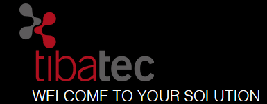
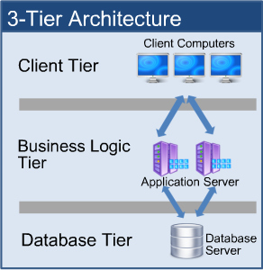
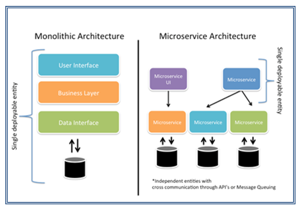
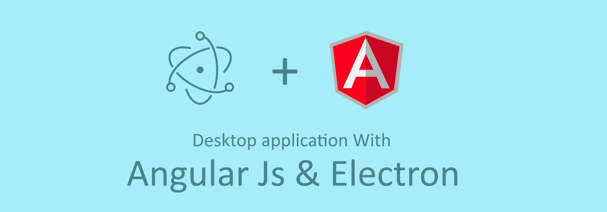

medica Bakti
Evaluierung von Frameworks
bbv Software Services AG
Antonino Leanza
Agenda
Nicht-funktionale Anforderungen an Bakti

Geschwindigkeit
- Jeder Datenzugriff dauert nicht länger als 1 Sekunde
- Schnelle Interaktion mit Benutzer
(z.B. Tastatur-Bedienung)
Erweiterbarkeit
- Diverse Arbeitsplätze
- Mit potentiell unterschiedlichen Geschäftslogiken
- Konsistentez über die gesamte "Routine"
Skalierbarkeit
- 200 User
- Viele parallele Anfragen
- Reaktions-Geschwindigkeit des Systems darf nicht degradieren
Sicherheit
- Authentisierung
- Authorisierung
- Verschlüsselung "at rest"
- Verschlüsselung "in transit"
- Daten dürfen medica nicht verlassen
Audit Log
- Jede Operation wird geloggt
- Analyse
Redundanz

- Server-Ausfall
- DB-Replica
- Disaster-Recovery
Management
- Konfigurieren
- Monitoring
- Service-Steuerung
Weitere ...
- Responsiveness - z.B. Tablet-App
- Widgtet-Konzept
- Validierte Umgebung, Zurückgreifen auf Business Know-How -> Einsatz von Frameworks
- ...
tibatec Framework

Architektur

Technologien

-
Desktop
- WPF
- Dev Express
- Entity Framework
- SQL Server
-
Web
- Asp.net MVC
- Telerik Framework
- Entity Framework
- SQL Server
Framework-Funktionalität

- User-Verwaltung
- Rollenmanagement
- Menü-Steuerung
- Tabellen "ohne Codieren"
- Takslisten mit Workflow
- Dokumentenverwaltung, inkl. Versionierung
- Gewisse Inhalte mit Stammdaten definierbar
Vorteile
- Schnell einsetzbar
- Funktionalität ist vorhanden
-
Für kleine, einfache Projekte geeignet
(Optimiert für Produktverwaltung, Webshops, ...)
Nachteile

- Keine dedizierte UI-Schnittstelle
- Keine Unit-Tests
- Deployment "via Code" -> Upgrade von Framework?
- Erschwerte Erweiterbarkeit: Enge "Verzahnung" der Layers (Monolith)
- Nicht skalierbar
- Zahlreiche Konfigurations-Tabellen
- UI-Technologie ist nicht responsive
Fazit
-
Diverse Nicht-Funktionale Anforderungen können nicht direkt abgedeckt werden
- Skalierbarkeit, Erweiterbarkeit, Redundanz, Audit Log
- "Klassischer", zuwenig massgeschneiderter Architektur-Ansatz
- "Generische" Natur des Frameworks bedingt grosser Aufwand für Anpassungen an Medica
-> Nicht empfohlen
iLAB-Software-Framework

Architektur
Technologien
Framework-Funktionalität
Vorteile
Nachteile
Fazit
-> ???
"Clean" Architecture

-> Wartbarkeit
Backend basierend auf Microservices
-> Skalierbarkeit, Geschwindigkeit, Redundanz
Explizite UI-Schnittstellen

-> Erweiterbarkeit, Industrie 4.0
GUI basierend auf Web-Technologien
-> Portierbarkeit, Responsiveness